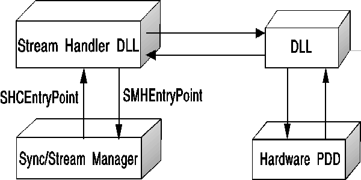

The Sync/Stream Manager DLL exports SPI services to higher-level OS/2 multimedia components (such as media drivers) and exports Stream Manager Helper (SMH) messages to support the stream handler DLLs. Additional SMH messages are exported by the SSM device driver to stream handler device drivers using standard OS/2 inter-device driver communication (IDC) interfaces (established using DevHelp_AttachDD).